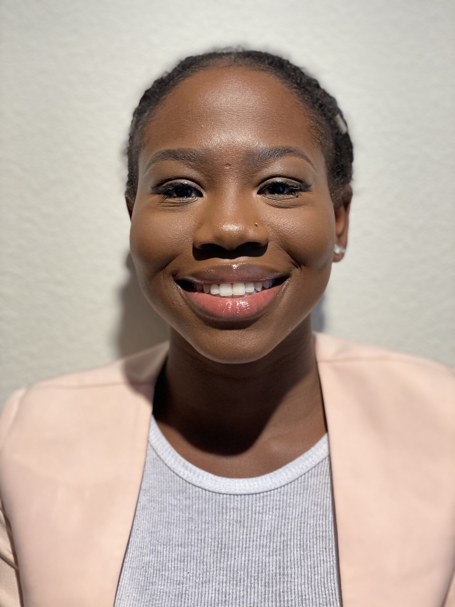
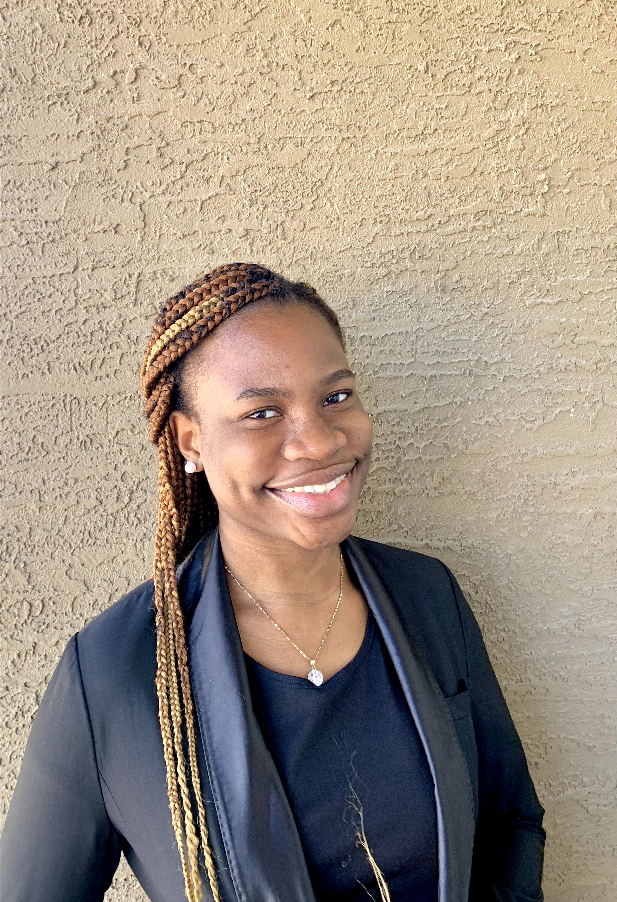

These are the Authors of the Power Rangers Blog!
Co-Author
Bolanle Adisa
Greetings Everyone!
My name is Bolanle. I am a Sophomore majoring in Computer Science and minoring in Mathematics at Huston-Tillotson University, Austin, Texas. I am a member of the Huston-Tillotson University Women in Tech and I am also a member of the National Society of Black Engineers. I am a W.E.B Dubois Scholar and I currently work as an IT technician on campus. My technical interests include front-end web development and futuristic technology. I want to get into the work force immediately after my obtaining my Bachelor's Degree to not only build new technology but also improve existing ones. Lastly, I hope my contribution to technology is able to provide value to others and improve their standard of living.View my latest blog
Co-Author
Ebun Adebesin
Hello!!!!!
I am Ebun Blessing Adebesin. Currently a Junior majoring in Computer Science and minoring in Mathematics at Huston-Tillotson University Austin, Texas. Which is the first Historically Black College/ University (HBCU) in Austin. I am the current President of the HT Women In Tech organization on my campus and also a member of the National society for Black Engineers. Outside of campus, I am a volunteer at Academy 4 which is a non-profit organization that provides mentorship for 4th graders.I am an avid learner and always ready to learn new things and share my knowledge!